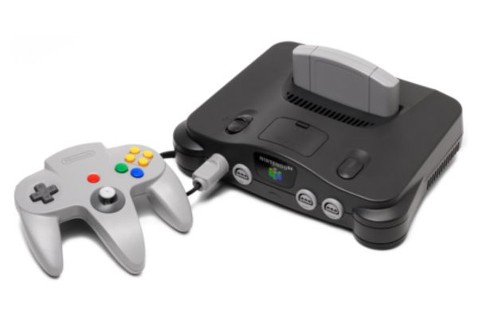
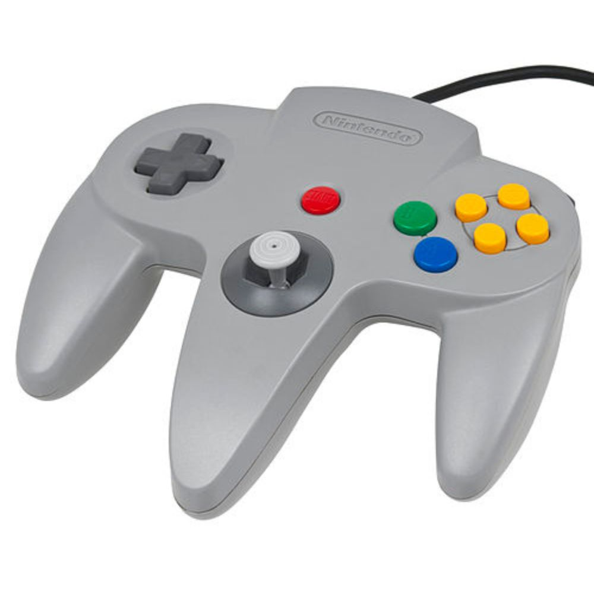
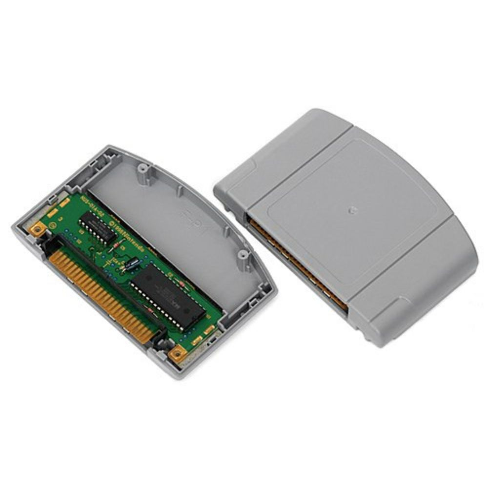

Nintendo 64

O Nintendo 64 (com a grafia estilizada NINTENDO64, e frequentemente abreviado de N64), é um console de jogos eletrônicos da quinta geração lançado pela Nintendo, em 23 de junho de 1996 no Japão. Foi uma revolução no mercado da época, graças à sua arquitetura de 64 bits, que permitiu introduzir 3D nos jogos, tornando-os mais imersíveis.
Contava com três títulos de lançamento disponíveis: Super Mario 64, PilotWings 64 e Saikyou Habu Shogi. Nos EUA e no Brasil foi lançado simultaneamente em 29 de setembro de 1996, e, em ambos os países, havia apenas dois títulos de lançamento disponíveis: Super Mario 64 e PilotWings 64; mas, enquanto nos EUA os títulos eram vendidos à parte, no Brasil, o console vinha com o cartucho de Super Mario 64 incluso. Já quando foi lançado na Europa, em 1 de março de 1997, o console contou com sete jogos de lançamento: além de Super Mario 64 e PilotWings, havia Wayne Gretzky's 3D Hockey, Cruis'n USA, Star Wars: Shadows of the Empire, FIFA Soccer 64 e Turok: Dinosaur Hunter.
O Nintendo 64 foi o último grande console doméstico a utilizar cartucho até o Nintendo Switch, lançado em 2017.
O console foi anunciado em 1993 com o codename "Project Reality", com plano de lançamento para arcades em 1994 e uma versão doméstica no ano seguinte. Em 1995, fora primeiro apresentado com o nome Nintendo Ultra 64, tendo o nome reduzido para Nintendo 64 em fevereiro de 1996 (5 meses antes do lançamento). Seu código de modelo é NUS-001 (cuja sigla significa Nintendo Ultra Sixty Four - o codinome do projeto).
O N64 possuía um hardware complexo, o que tinha um preço: os programadores afirmavam que era um grande desafio manter todos os processadores da máquina trabalhando em sincronia.
História
O Nintendo 64 foi o último console doméstico a fazer uso de cartuchos de memória ROM, enquanto as concorrentes utilizavam CD-ROM nos seus consoles. As principais vantagens eram a velocidade de acesso, já que as taxas de transferências na leitura de um chip de ROM são muito maiores do que as de um CD-ROM, durabilidade e segurança.
Entre as vantagens técnicas do cartucho sobre outras mídias destaca-se a capacidade de carregar dentro de si coprocessadores, chips de função específicas ou ainda microcódigos e linguagens de programação personalizados.
Entretanto, o custo de produção dos cartuchos era maior do que o dos CD-ROMs e a capacidade de armazenamento era menor, o que praticamente impossibilitava a utilização de arquivos de som e vídeos pré-gravados nos jogos.
O Nintendo 64 teve algumas "inovações" que não eram originais. O Atari Jaguar supostamente foi o primeiro console 64-bit (mas tinha diversos processadores que somados davam 64), o Vectrex foi o primeiro com alavanca analógica (Analog Stick) e o Bally Astrocade foi o primeiro com quatro entradas de controle. Mas o 64 foi o primeiro sistema popular com essas inovações.
Controles

No controle
Alavanca Analógica
- O Nintendo 64 foi o primeiro sistema a utilizar uma alavanca analógica em seu controle. A alavanca analógica é superior a um direcional digital pros jogos em terçeira dimensão (aquele em formato de cruz, mas mesmo assim não foi descartado no controle do Nintendo 64) por que com ela se pode aplicar uma intensidade diferente ao movimento (empurrando-a só um pouco ou até o fim, dependendo do tipo de movimento que se quer que o jogo entenda, como acontece no Super Mario 64: inclinando a alavanca levemente, Mario anda, e quando inclina no máximo, Mario corre), e ainda por não ser limitada somente às oito direções que o direcional digital é capaz de apontar. Hoje em dia todos os controles de videogames caseiros utilizam essa tecnologia (o PlayStation e o Sega Saturn tiveram de lançar controles com alavancas posteriormente), que foi apresentada ao mundo nesse joystick.
- Gatilho Z - O Botão Z, que fica na parte traseira central do controle e é pressionado com o dedo indicador, é utilizado como gatilho. Para jogos de tiro em primeira pessoa (como GoldenEye 007) esse botão dá a impressão de ser um gatilho de arma de fogo, proporcionando uma sensação mais realista. Hoje em dia a maioria dos controles de videogame possui uma função parecida com essa.
- Alavanca analógica pros jogos 3D do controle do Nintendo 64
- Rumble Pak - Esse acessório, como descrito acima, vibra de acordo com os acontecimentos mostrados na tela do jogo, dando uma sensação de interatividade com o que está sendo visto, Essa é outra função amplamente utilizada nos jogos atuais (o segundo controle do PlayStation, o DualShock, já possuía a função) e que começou no Nintendo 64.
Jogos
Super Mario 64 - Super Mario 64 redefiniu os jogos de ação/plataforma em 3D, tendo influência direta na forma com que esses jogos são jogados hoje em dia. Tudo isto se deve à alavanca de controle analógica, já citada aqui, e ao design inovador de fases, dirigido por Shigeru Miyamoto.
"Z-Targeting" em The Legend of Zelda: Ocarina of Time - Sistema de mira automática que consiste em travar a mira em algum inimigo ou objeto do cenário, pressionando um botão (no caso, o Botão Z, por isso o nome de "Z-Targeting") assim que a mira se encontrar temporariamente no local/inimigo/personagem com o qual se deseja interagir/atacar. Ainda muito usado hoje em dia em jogos de ação e aventura em três dimensões.

O Nintendo 64 ficou conhecido por ser um console que oferecia a melhor experiência multiplayer, graças a sua capacidade de aceitar 4 controles simultâneos sem ajuda de acessório, e também por dominar nos gêneros de corrida, como jogos como San Francisco Rush, Extreme-G e Mario Kart 64, aventura 3D, como títulos como Super Mario 64 e Banjo Kazooie, e FPS, pois contava com títulos como Goldeneye 007 e Perfect Dark, além de versões superiores de jogos como Quake 2, que eram comparáveis as versões para PC.
STAR FOX 64Gameplay- demonstração do jogo.
Especificações
| CPU | GPU | ||
|---|---|---|---|
| Fabricante: | NEC / MIPS Technologies MIPS R4300i (RISC) |
Chipset: | Silicon Graphics Reality Co-Processor (RCP) |
| Clock: | 93.75 MHz | Clock: | 62.5 MHz |
| Barramento: | 64 bits | Memória de vídeo: | 4 MB RDRAM (expansível para 8 MB) |
| Resolução: | 320×240 px até 640×480 px | ||
| Áudio | Mídia | ||
| Chip: | SGI Reality Signal Processor (RSP) | Tipo: | Cartucho |
| Canais: | 16 (ADPCM) | Capacidade: | 32 MB (médio), até 64 MB |
| Frequência de amostragem: | 44.1 kHz | ||